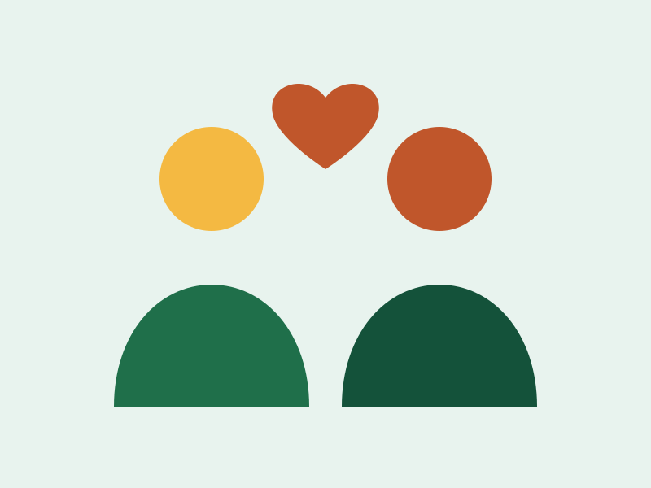

Missão
Promover dignidade e autonomia a famílias em vulnerabilidade por meio de ações educativas, alimentares e comunitárias.
Há 12 anos conectamos pessoas dispostas a ajudar com famílias que precisam de apoio em alimentação, educação e inclusão social.
Quero ser voluntário
Promover dignidade e autonomia a famílias em vulnerabilidade por meio de ações educativas, alimentares e comunitárias.
Ser referência regional em engajamento voluntário, com transparência e impacto social mensurável.
Respeito, empatia, transparência, cooperação e compromisso com a comunidade.